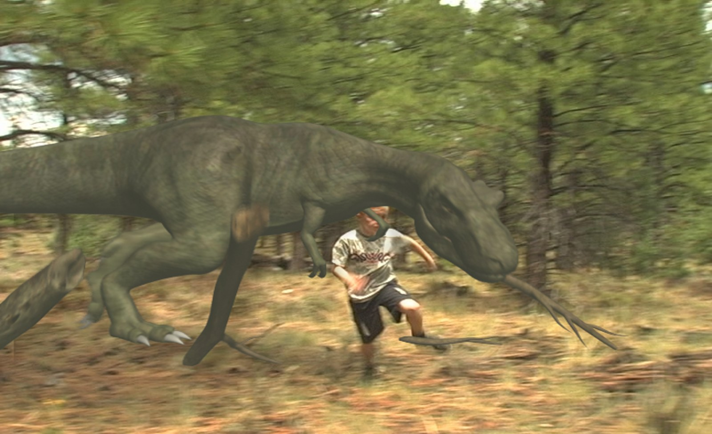
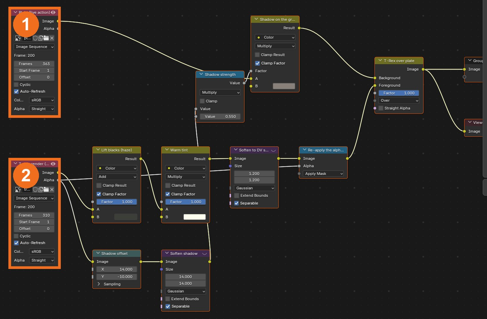
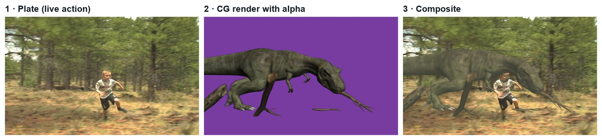
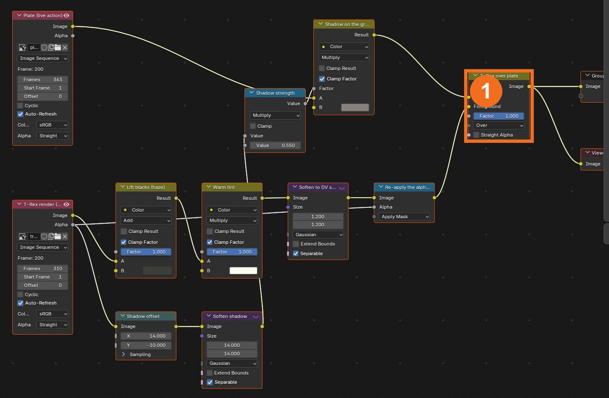
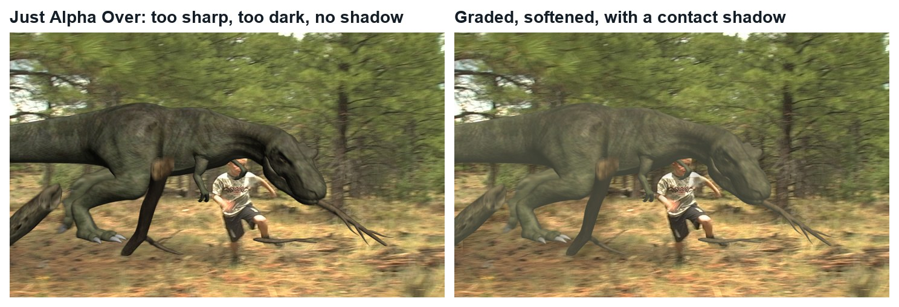
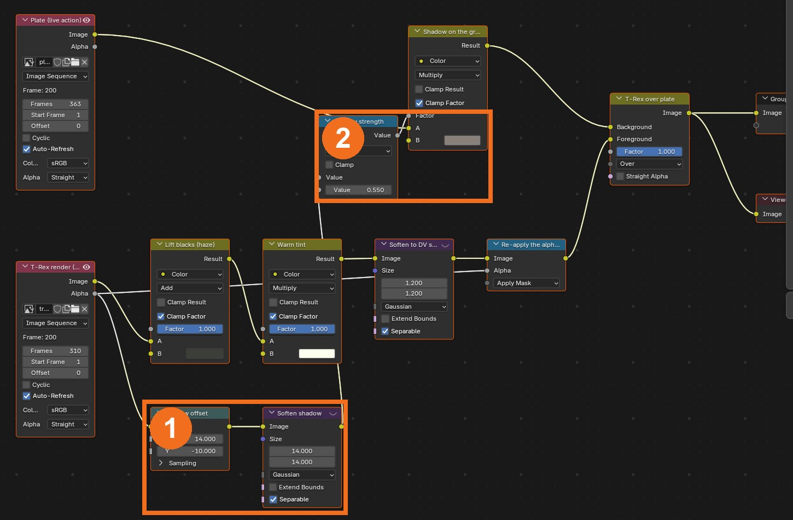
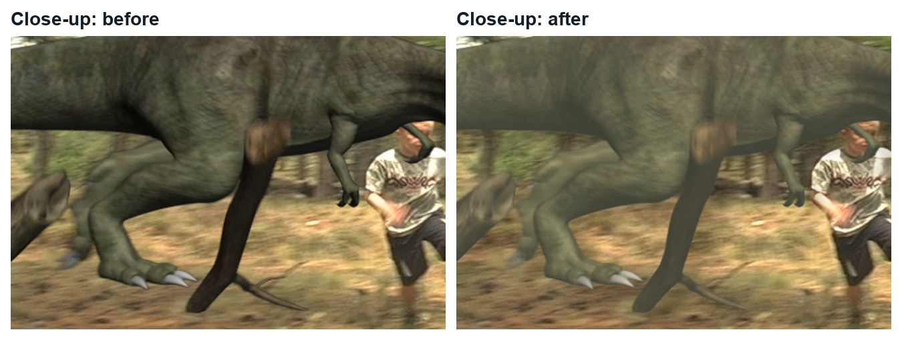
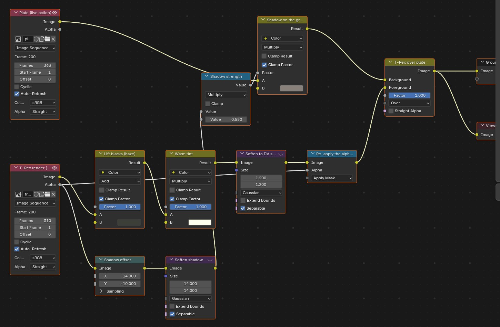
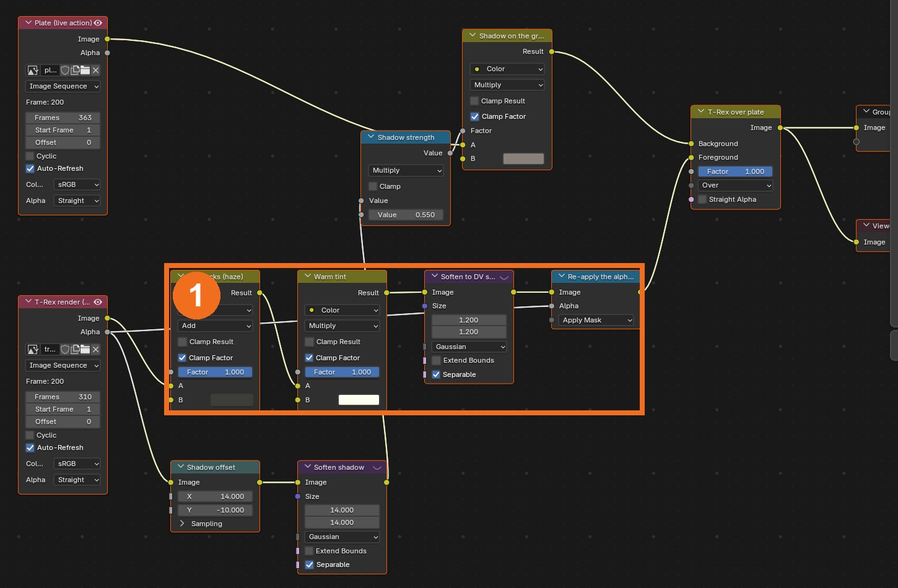
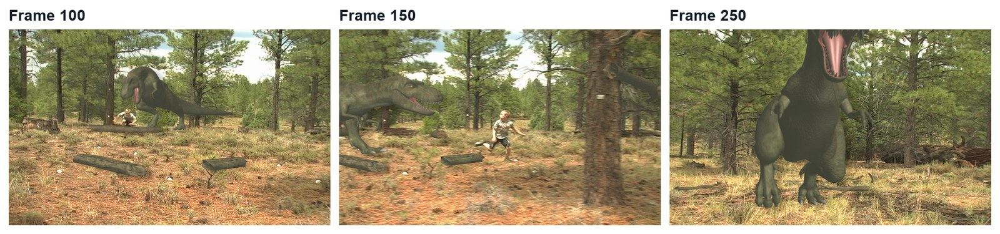

Take a finished CG creature and make it belong in live footage, using only Blender’s compositor: layer, shadow, grade, soften.
5 illustrated stagesOne lessonAlpha Over · contact shadow · black level · colour matchPractice plates: Hollywood Camera Work

The demo composite, made in Blender’s compositor with this tutorial’s steps. Plate and CG render: Hollywood Camera Work.
Layer. Shadow. Match.
No tracking and no 3D: the fastest way to learn what a compositor does. A good first shot-library tutorial.
My supports
Turn on any help you want. Your teacher may have set some for you. They change how the guide helps, not what is assessed.
Shot brief
Make the creature belong.
You are given the forest plate and a matching CG render with alpha. Deliver a composite where the creature shares the plate’s light, softness and ground, then a change of the director’s choosing.
You will hand in
A screenshot of your node tree
The finished shot as an MP4
The director’s change, with a three-sentence explanation
Credits for the plate and the method
Footage and credits
The plate is from Hollywood Camera Work. You may use it and post your results with credit, but do not re-upload the plate itself. The CG render was made by Hollywood Camera Work to match the plate.
On a film, the tracking and 3D departments hand the compositor separate layers. The compositor is the last artist to touch the shot and is responsible for whether the audience believes it.
Knowledge first
Why this works.
Alpha and layering
An alpha channel stores transparency. Alpha Over puts a foreground with alpha over a background.
Match three things
Black level (how dark the darkest part is), colour temperature (warm or cool) and sharpness. If these match the plate, the eye accepts the layer.
Contact
A shadow where the creature meets the ground does more than any colour tweak.
Design principles in the shot
Unity: one light and one softness across the frame. Contrast: the creature’s darks no darker than the forest’s. Emphasis: the eye follows the chase.
What this assesses
Skills you will show.
Skill (sprint skill ID)
Where you show it
Render · BL-RND-01
Steps 1 and 5
Lighting and colour match · BL-LGT-01 · PS-LGT-02
Steps 3 and 4
Critique and refinement · GD-CRIT-01
Step 5
VFX craft (layering, alpha, shadow, grade)
Steps 1–4
Primary achievement evidence: the director’s change (step 5). Guided steps and supports are recorded separately from achievement. Shot-library option in sprint mm12-26-s08. The registry has no VFX skill IDs yet; see the animation skills proposal.
Session A · Lesson 1 · VFX shot library
Make a CG creature belong in the plate.
A 3D artist has already rendered a T-Rex to match this forest footage. Your job is the last one in the pipeline: the compositor who makes it look real.
TODAYLoad and layer (15 min), contact shadow (15 min), grade and soften (20 min), director’s change (15 min).
01
Load the plate and the CG render
IN SHORTDownload both; set output; load plate and render as sequences; view each.
Download TRex DV Plate and TRex Main Render from Hollywood Camera Work and unzip both into your project folder.
New file. Output properties: 720 × 480, Aspect X 10 and Y 11 (this is old DV video), 30 fps, frames 1–310.
Compositing workspace. Add › Input › Image and open the first plate frame; Blender loads the sequence. Set Frames to 363 and tick Auto-Refresh.
Add a second Image node for the render: first frame trex_chase2.0001.png, Frames 310, Auto-Refresh.
Connect each to a Viewer in turn and scrub. The render has a transparent background: that transparency is its alpha.
The demo composite (real Blender render, 10 seconds). Plates: Hollywood Camera Work.
Click by click (real Blender screenshots)

The two input nodes in the demo: the plate (1) and the CG render with its Alpha output (2).
STEP CHECKLIST
GLOSSARY
Alpha: The part of an image that says how transparent each pixel is
Plate: The filmed footage a VFX shot is built on

Real frames at frame 200: the plate, the CG render (shown over purple so you can see its alpha), and the finished composite.
WHYCompositing is layering. The CG was rendered separately with an alpha channel so it can be placed over the footage and adjusted without re-rendering.
CHECKBoth sequences loaded, playing in sync, and you can explain what alpha is.
FIXOnly one frame shows? Set Frames to the sequence length and tick Auto-Refresh.
WORKED EXAMPLE · DIFFERENT OBJECTThe demo uses plate frames 1–310 with render frames 1–310.
STRETCH (AFTER THE CHECK PASSES)Find the frame where the creature is closest to the camera.
Method basis: H1 · B5. Values and sequence are authored for this project.
02
Layer it with Alpha Over, and see why that is not enough
IN SHORTAlpha Over; Viewer and Backdrop; frame 200; list the give-aways.
READ ALOUD
DOCUMENT: Your node tree SELECT: Alpha Over node TOOLS / ROUTE: Add › Color › Alpha Over · Viewer · Backdrop
Add an Alpha Over node. Plug the plate into Background and the render into Foreground.
Connect the result to a Viewer and to the output. Turn on Backdrop.
Scrub to frame 200. The creature is in the shot, but look closely.
List what gives it away: it is sharper than the footage, its blacks are darker than anything in the plate, and it casts no shadow.
Keep this list: each item is one of the next steps.
Click by click (real Blender screenshots)

Alpha Over in the demo tree (1): Background from the plate branch, Foreground from the CG branch.
STEP CHECKLIST
GLOSSARY
Alpha Over: The node that places a foreground with transparency over a background

Real renders of frame 200: a plain Alpha Over (left) and the finished grade with a shadow (right).
WHYCG comes out of the renderer perfect: pure blacks, razor edges. Footage never is. The compositor’s job is to damage the CG until it matches.
CHECKA working Alpha Over and a written list of at least three things that give the CG away.
FIXImage goes white or wrong? Check the order: Background first, Foreground second.
WORKED EXAMPLE · DIFFERENT OBJECTIn the demo the CG’s darkest pixels are near 0; the plate’s darkest are about 0.05.
STRETCH (AFTER THE CHECK PASSES)Compare the sharpness of a tree trunk in the plate with the creature’s edge.
Method basis: B5. Values and sequence are authored for this project.
03
Add a contact shadow from the alpha
IN SHORTAlpha → Translate → Blur → Math; Mix (Multiply) on the plate; check the feet.
READ ALOUD
DOCUMENT: Your node tree SELECT: Translate, Blur, Math, Mix (Multiply) TOOLS / ROUTE: Add › Transform › Translate · Filter › Blur · Converter › Math · Color › Mix
Take the render’s Alpha output into a Translate node: X about 14, Y about −10, so the shape shifts down and to the side.
Blur it (about 14 px). This soft grey shape is your shadow matte.
Multiply it by about 0.55 with a Math node: that is the shadow’s strength.
Add a Mix node set to Multiply between the plate and Alpha Over: plate into A, a dark brown into B, your shadow matte into Factor.
Check the feet on frame 100 and frame 200. The ground under the creature should darken.
STEP CHECKLIST
GLOSSARY
Contact shadow: The dark area where something meets the ground
Matte: A black-and-white image that says where to act

Real screenshot of the demo tree: the alpha is shifted and blurred (1), then used to darken the plate (2).
WHYThings that touch the ground darken it. Even a rough shadow made from the alpha ties the creature to the dirt.
CHECKA soft dark area on the ground under and beside the creature.
FIXShadow covers the whole frame? You used the Image output, not Alpha. Shadow too strong? Lower the Math value.
WORKED EXAMPLE · DIFFERENT OBJECTDemo values: offset (14, −10), blur 14, strength 0.55, colour (0.25, 0.22, 0.2).
STRETCH (AFTER THE CHECK PASSES)Animate the offset so the shadow matches the sun direction better.
Method basis: B5. Values and sequence are authored for this project.
04
Grade and soften the CG to match the footage
IN SHORTLift (Add); Tint (Multiply); Blur 1.2; Set Alpha Apply Mask; compare.
READ ALOUD
DOCUMENT: Your node tree SELECT: Mix (Add), Mix (Multiply), Blur, Set Alpha TOOLS / ROUTE: Color › Mix · Filter › Blur · Converter › Set Alpha (Apply Mask)
Between the render and Alpha Over, add a Mix node set to Add with a very dark grey-green (about 0.045): this lifts the blacks to the plate’s haze level.
Add a Mix node set to Multiply with a warm tint (about 1.08, 1.02, 0.86): the forest light is warm.
Add a Blur of about 1.2 px: DV footage is soft.
Add Set Alpha, Type Apply Mask, with the render’s original Alpha. Without it, the colour you added leaks over the whole frame.
Compare with your plain Alpha Over. Adjust until the creature’s darkest and brightest parts match nearby trees.

Close-up of frame 200, before and after the grade.
Click by click (real Blender screenshots)

The whole demo node tree.
What went wrong when we built the demo: our first grade washed out the entire frame. We had replaced the alpha instead of applying it as a mask, so the lifted blacks were added everywhere.
STEP CHECKLIST
GLOSSARY
Black level: How dark the darkest part of an image is
Premultiplied: Colour already multiplied by its alpha, which Alpha Over expects

Real screenshot of the demo tree: Lift, Tint, Blur, then Set Alpha (Apply Mask) before the Alpha Over.
WHYMatch three things and most composites work: black level, colour temperature and sharpness.
CHECKA creature whose blacks, colour and sharpness match the footage around it.
FIXWhole image washed out? You skipped Set Alpha › Apply Mask, so the lift is being added everywhere.
WORKED EXAMPLE · DIFFERENT OBJECTDemo values: lift 0.045, tint (1.08, 1.02, 0.86), blur 1.2.
STRETCH (AFTER THE CHECK PASSES)Add film grain or noise over the creature to match the plate’s grain.
Method basis: B5. Values and sequence are authored for this project.
05
Practical check: the director’s change, then render and defend
IN SHORTRead the card; pick the branch; change a copy; render; defend; credit.
READ ALOUD
DOCUMENT: Your composite · the director’s card SELECT: Whatever the card requires TOOLS / ROUTE: Your own decisions
Read your director’s card (below).
Decide which branch of the tree it touches: shadow, grade, or something new.
Make the change in a copy of your file and render the shot (FFmpeg, H.264).
Screen it and explain two compositing choices.
Credit the plates (Hollywood Camera Work) in your evidence.

Three real frames from the finished demo.
Card
The director says
1 · Dusk
“Make the whole shot dusk: cooler, darker, longer shadow.”
2 · Found footage
“It should feel like an old home video: grain, softness, a date stamp.”
3 · Heavier
“It doesn’t feel heavy. Give it a stronger shadow and a camera shake when it lands.”
4 · Fog
“Morning mist: the creature fades into haze when it is far away.”
Independent evidence: the main achievement evidence for this tutorial.
STEP CHECKLIST
GLOSSARY
Grade: The colour treatment of a shot
WHYBecause the CG is a separate layer, a compositor can change the shot’s whole mood without touching 3D.
CHECKA changed shot that meets the card, rendered, with an explanation and credits.
FIXStuck? Name the branch the card touches first. (Independent step: the Coach can explain tools but not decide your changes.)
WORKED EXAMPLE · DIFFERENT OBJECTWorked example on a different shot: a “make it foggy” card needed only a stronger lift and a pale tint.
STRETCH (AFTER THE CHECK PASSES)Take two cards at once.
Method basis: B5. Values and sequence are authored for this project.
Before you submit
Student QA.
Evidence conversation
Keep it short and specific.
SENTENCE FRAMESThe CG gave itself away because ___. · I matched the black level by ___. · For the director’s card I changed the ___ branch using ___.
Figures marked Illustration are drawn, not screenshots. Step values are starting points authored for this project. Draft for teacher review; not yet classroom-piloted.